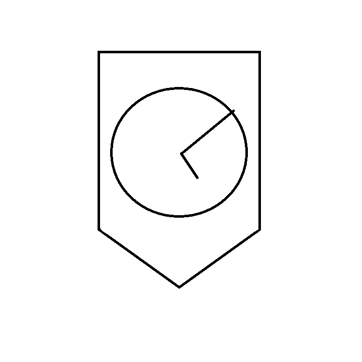
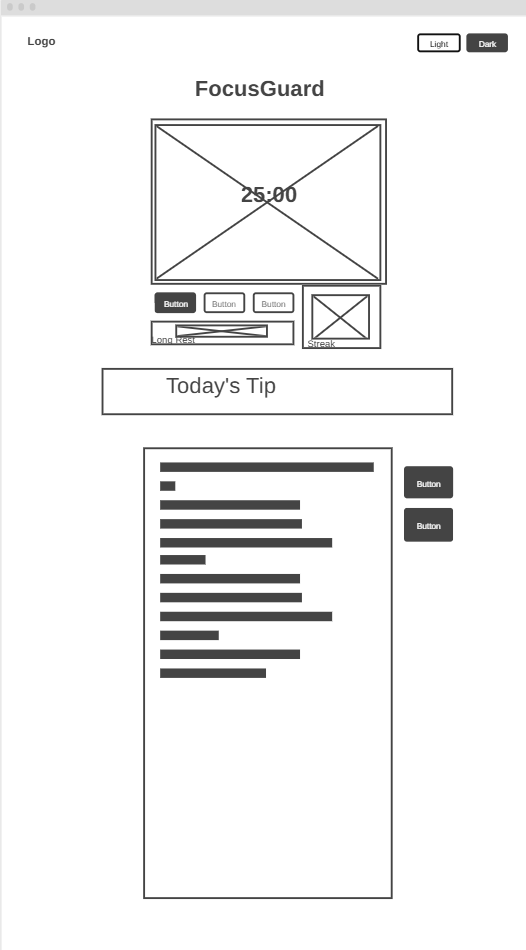

Overview
Purpose
FocusGuard is a clean, accessible productivity web app designed to help college students, stay focused, study with less distraction, and build consistent study habits. The app will combine a customizable Pomodoro method timer, daily streak tracking, and a simple task list in one distraction-free interface.
Audience
The primary audience includes college students (ages 18-26) or a secondary audience of lifelong learners who want a simple, visually-appealing tool to improve focus and build better study routines. These users value clean design, accessibility, keyboard-friendly interfaces, and tools that help them stay disciplined without feeling overwhelming by distractions or locating the next task.
Dynamic Elements
JavaScript will power several interactive features:
- Timer System: Multiple timer modes (Pomodoro, Short Break, Long Break, Custom) with start/pause/reset functionality. The timer will display updates live using manipulation of document objects.
- Theme Switcher: The user can toggle between Light and Dark themes. Theme preference is saved using localStorage.
- Streak Counter: Tracks consecutive days the user completes at least one focused session. Uses an array of dates and conditional logic to calculate and display the current streak.
- Quick Tips: An array of productivity tips that can be filtered by category (“Productivity”, “Focus”, or “All”) using the filter() array method and displayed dynamically.
- Task List: The user can add, mark as complete, and also delete tasks. Tasks are stored as an array of objects and rendered to the DOM. Completed tasks appear with strike-through formatting.
The app will use multiple functions, event listeners, DOM selection & modification, conditional branching (if/else and ternary), objects, arrays, and array methods (filter, forEach, map).
Branding
Website Logo

Style Guide
Color Palette
Palette URL: https://coolors.co/0f172a-1e2937-22c55e-64748b-f8fafc
| Primary | Secondary | Accent 1 | Accent 2 |
|---|---|---|---|
| #0F172A | #1E2937 | #22C55E | #F8FAFC |
Pseudocode for FocusGuard
// 1. On page load
- Load saved theme from localStorage and apply it
- Load saved streak data and calculate current streak
- Load saved tasks from localStorage and render them
- Show a random productivity tip
// 2. Timer functionality
- When user clicks a timer mode button (Pomodoro / Short / Long / Custom)
> Set timer duration based on selection
> Update display
- When Start button is clicked
> Start countdown using setInterval
> Update timer display every second
> When timer reaches 0, play sound, show completion message, update streak
- Pause/Reset buttons stop/reset the interval and display
// 3. Theme Switcher
- When theme button is clicked
> Remove current theme classes
> Add new theme class to body
> Save choice to localStorage
// 4. Tips Section
- Store tips as array of objects {id, category, text}
- When filter button is clicked (All / Productivity / Focus)
> Use filter() to get matching tips
> Use forEach() to render them into the DOM
// 5. Task List
- When "Add Task" form is submitted
> Create new task object and push to tasks array
> Save to localStorage
> Re-render task list
- When task checkbox is clicked
> Toggle completed property using conditional logic
> Re-render list with strike-through styling
- Delete button removes task from array and re-renders list
Wireframes
Create wireframes for your project page(s). One for each page and list them here.
Landing page
Clean single-page application layout. Top navigation with logo and theme toggles. Hero section with timer display and mode buttons. Below the timer: Streak counter & Today's tip card. Bottom section contains the task list. It will stack vertically on mobile.
